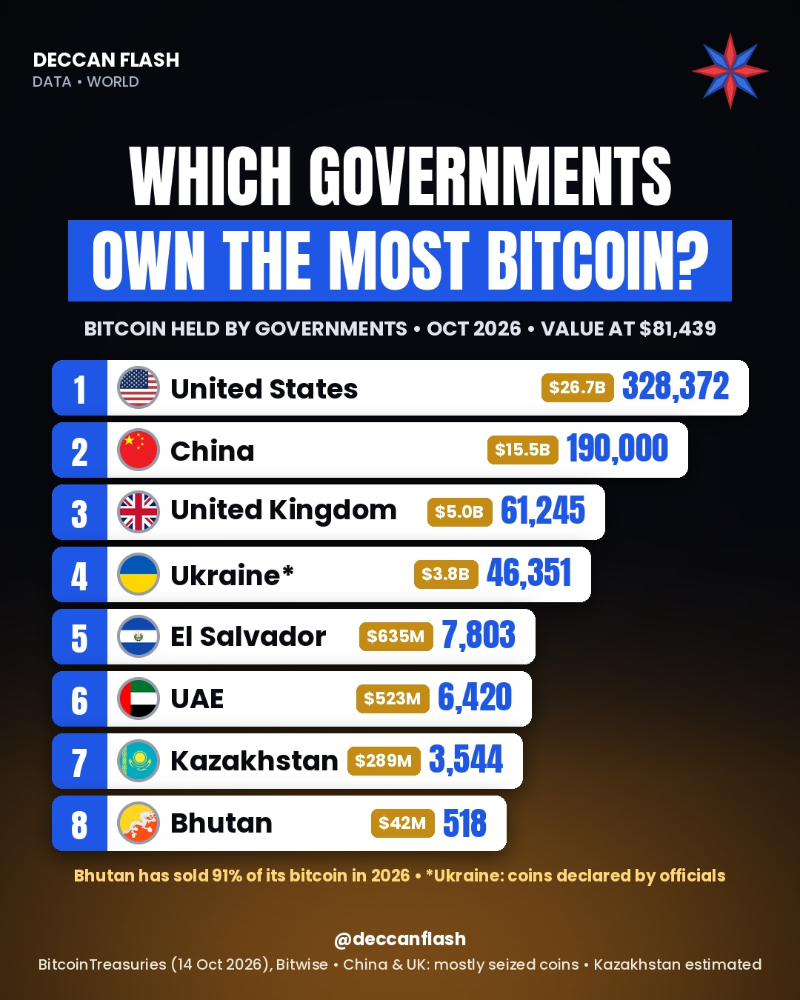

Money · World
Which governments own the most bitcoin?
The United States holds about 51% of all bitcoin owned by governments, ahead of China and the United Kingdom. These three hold 90% of the 645,600 bitcoin that trackers link to 13 governments. Most of it was seized from criminal cases, not bought.
Bitcoin held by governments, October 2026
Number of bitcoin (BTC). Top 9 governments. The US is highlighted.
The ranking
| # | Government | Bitcoin | Value |
|---|---|---|---|
| 1 | United States | 328,372 | $26.9B |
| 2 | China | 190,000 | $15.6B |
| 3 | United Kingdom | 61,245 | $5.0B |
| 4 | Ukraine* | 46,351 | $3.8B |
| 5 | El Salvador | 7,807 | $640M |
| 6 | UAE | 6,420 | $526M |
| 7 | Kazakhstan | 3,544 | $290M |
| 8 | North Korea | 803 | $66M |
| 9 | Bhutan | 518 | $42M |
| – | All 13 government entities tracked | 645,600 | $52.9B |
Values at $81,969 per bitcoin, the BitcoinTreasuries price on 20 Oct 2026; they move with the price every day. *Ukraine: bitcoin declared by public officials, not a state reserve. China and UK figures are mostly coins seized in fraud cases. North Korea's figure is linked to hacks; our Instagram graphic leaves it out. India's government is not on the list.

Quick answers
Which country owns the most bitcoin?
The United States government, with about 328,372 bitcoin in October 2026, according to BitcoinTreasuries. China is second with about 190,000.
How did governments get their bitcoin?
Mostly by seizing it in criminal and fraud cases. El Salvador and Bhutan are exceptions: El Salvador buys bitcoin, and Bhutan mined it.
Does India's government own bitcoin?
No. India is not among the 13 government entities whose bitcoin is tracked by BitcoinTreasuries.
How much bitcoin do governments own in total?
About 645,600 bitcoin across 13 government entities, worth roughly $52.9B at $81,969 per bitcoin.